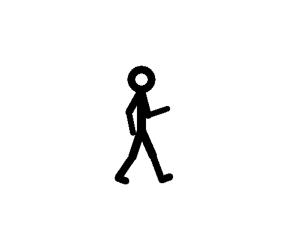
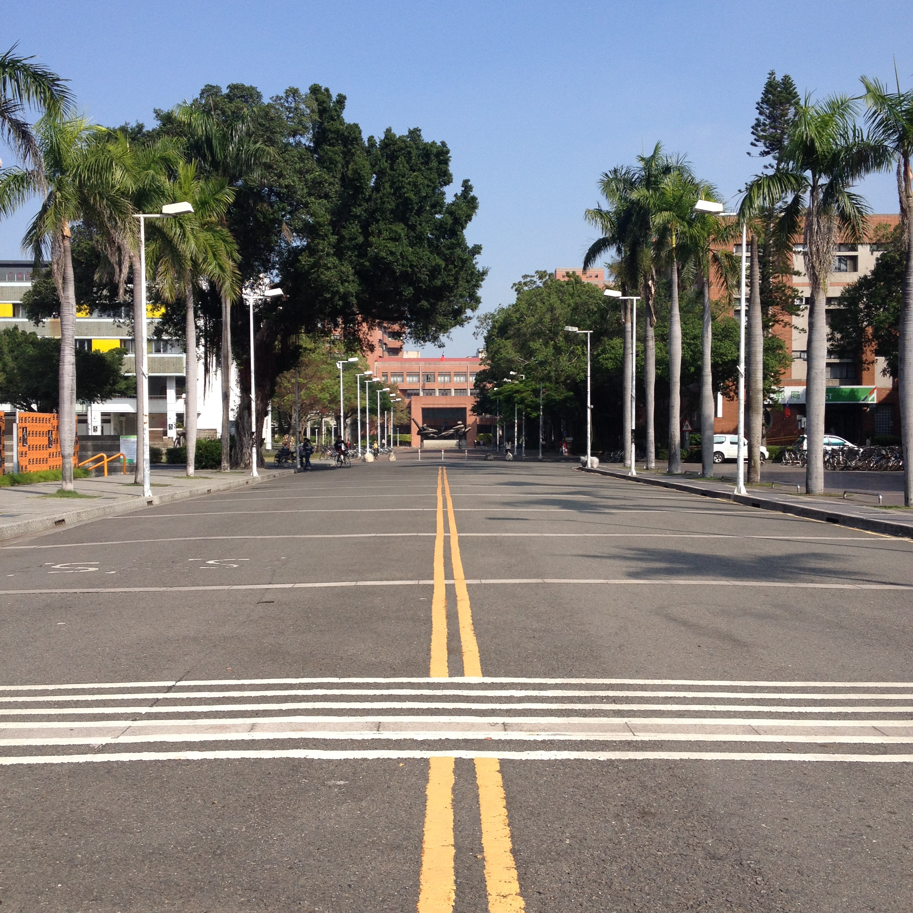

>
選校區
光復校區
成功校區
自強校區
選姿勢
姿勢一
姿勢二
姿勢三
選風格
風格一
風格二
風格三
選情調
姿勢一
姿勢二
姿勢三
歡迎來到畢業團拍
畢
業
季

yoyo團隊製作
HOme
光復校區

深深的話要淺淺地說
長長的路要揮霍的走
親愛的
我們依舊在旅途中走著
別忘了要溫柔
別忘了要快樂
自從那一天起，我自已做決定
自從那一天起，不在意誰的否定
自從那一天起，聽我說的道理……
有沒有那麼一首詩篇 找不到句點
青春永遠定居在 我們的歲月
有沒有那麼一張書籤 停止那一天
最單純的笑臉和 最美那一年
明天我就要離開，熟悉的地方和你
我會牢牢記住你的臉
我會珍惜你給的思念
或許好不容易走到的遠方，是最深最孤獨的黑夜
總使沒有人一起顛沛流離，也要學習成為自己的太陽
長大後我們都離家出走
茫茫人海裡游
抬起頭才發現 流眼淚的星星正在看著我
他說加油 讓我為你感到光榮
迎面撲來是街上悶熱慾望 我輕輕一躍跳進人的河裡
繼續走
在我們的青春裡
yoyo團隊製作
HOme
成功校區
不變的你和我們 是彼此尋覓的依據
往後每一次回來 都還能找到你平常的位子
找到你曾經的熱情，回憶 珍惜
從明天起我願告別昨日
輕輕醉倒或是隨風飄蕩
向著春暖花開的遠方流浪
讓離別的躁動 在熙來攘往中安份一些
然後再把它們 和這個夏天一次打包 乖乖的在床底藏好
面對告別 每個人有自己的方式與速度
我想我會在某個星期三的午後
來到這裏
一如曲終人散還不肯離去的觀眾 靜靜延續戲劇的感動
yoyo團隊製作
HOme
自強校區
從陌生的零 到我們共有的默契
我們最快樂這幾年 一切生動又強烈 有真正活著的感覺
寫一首歌讓你帶回去
有一條簡單的旋律指引你專心
有一個生活簡單的人 溫柔堅定
我們繼續走下去 繼續往前進
看這條路肯讓我們走到哪裏
循著它的光 曲折轉彎找到有光的地方
我喜歡你也記得我們的回憶
yoyo團隊製作